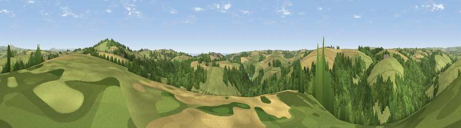

Viewpoint near Sandplace
#10800 in England · top 18% of its area beats it · near Sandplace · path 255 mWhere it is
The exact computed spot (SX 25225 57525). Click the marker for map links.
Public access: the nearest public right of way is about 255 m away — the final stretch may cross private land. Computed from Natural England's CRoW access layer and OpenStreetMap rights of way — not the legal definitive map. Always verify locally.
The view, rendered

A 360° render of this exact spot computed from the terrain model, tree cover and land cover — summer colours, afternoon light, calibrated against photographs of famous viewpoints. Real trees, hedges and buildings will differ in detail.
The panorama
Grey silhouette: terrain skyline in each direction (720 bearings, Earth curvature and refraction included). Dashed green: skyline with trees (+15 m) and buildings (+8 m) as obstacles. Blue strip: how far the ground is visible on each bearing.
Where the view opens
Wedge length = distance to the farthest visible ground on that bearing (vegetation-aware). Rings at 10, 25 and 50 km.
What fills the view
41% grassland · 41% woodland · 17% cropland ·
Angular shares of the visible panorama (visual magnitude), not map area. Landscape diversity 0.47 (0–1 Shannon).
Key numbers
More beautiful places nearby
The staircase of upgrades: each row has a higher view potential than everything closer. Driving times are estimates from straight-line distance, calibrated against real road routing — check an actual route before setting out.
| Place | Direction | Drive | Score |
|---|---|---|---|
| Bin Down | E · 2 km | ~6 min | 80.2 |
| Viewpoint near Seaton | SE · 5 km | ~10 min | 81.1 |
| Viewpoint near Downderry | ESE · 6 km | ~14 min | 81.5 |
| Viewpoint near Polperro | SW · 8 km | ~17 min | 81.9 |
| Viewpoint near Polperro | SW · 9 km | ~18 min | 83.7 |
| Pencarrow Head | SW · 12 km | ~22 min | 86.0 |
| Viewpoint near Stenalees | W · 25 km | ~41 min | 88.0 |
| Viewpoint near Crackington Haven | NNW · 39 km | ~58 min | 88.1 |
50.39157, -4.46016 · source: screening · position refined by local search. Computed location — check access rights before visiting.